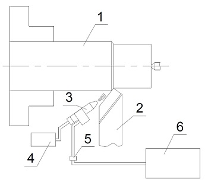

В современном машиностроении повышение эффективности процессов обработки неразрывно связано с использованием эффективных смазочно-охлаждающих технологических жидкостей (СОЖ).
Применяются СОЖ на масляных и водоэмульсионных основах с различными присадками поверхностно-активных веществ, использование которых положительно влияет на производительность обработки деталей и качество их поверхностного слоя.
В настоящее время в мировой практике расходуется довольно большое количество различных типов СОЖ. Вместе с тем, применение СОЖ требует использования специальных очистных сооружений, необходимых для их утилизации, организацию их приготовления, транспортировки, регенерации, а также необходимость обезжиривания стружки и обработанных поверхностей, что существенно влияет на стоимостные показатели производственных процессов изготовления деталей.
При этом следует указать на одно из важных обстоятельств применения СОЖ, особенно на масляной основе, - их влияние чрезвычайно вредно для здоровья человека в результате попадания СОЖ в зону резания, воздушная среда, окружающая ее, загрязняется химическими веществами типа масляных аэрозолей, что негативно влияет н а здоровье человека, вызывая различные заболевания.
Влияние компонентов СОЖ на здоровье человека
| Компоненты СОЖ | Типы эффектов |
|---|---|
|
CCl2-CH, Cl, MePo4 (хлориды, фосфаты и др) |
Наркотические эффекты, депрессия нервной системы, раздражение глаз и частичная или полная потеря зрения |
| MeNO2 в комбинации с NH (CH2 CH2 OH)2 | Различные кожные заболевания типа дерматитов, угревая сыпь, аллергия |
| Аэрозоли гидрокарбонатов масел | Липоидная пневмония, астма |
В связи с этим во многих индустриально развитых странах за последние годы ужесточаются экологические требования по применению СОЖ в металлообработке, уделяется большое внимание экологической безвредной технологии производства.
Решение экологических проблем современного производства идет по пути применения экологически чистых производственных технологий, снижающих уровень шумового, теплового, светового и других воздействий технологического процесса на окружающую среду. За последние годы проводятся исследования по замене традиционных СОЖ на масляной и водоэмульсионных основах применяемых при металлообработке на более чистые технологии с использованием СОЖ, минимизирующих вредное воздействие на окружающую среду. Результатами проведенных исследований являются модификации СОЖ, содержащих нетоксичные элементы, применение твердых смазок на органической основе, создание систем, минимизирующих количество СОЖ, подаваемых в зону резания, процессы с полным отказом от применения СОЖ, представляющие собой пример сухого резания, а также использующие комбинированные методы воздействия на зону резания, обеспечивая эффекты охлаждения зоны резания и уменьшения трения в зоне контакта обрабатываемого материала и инструмента.
Одной из разновидностей примера использования сухого резания взамен традиционных СОЖ являются экологически чистые электронно-ионные технологии, основанные на подаче в зону резания ионизированного и озонированного воздуха.
Физико-химический механизм действия ионизированных газовых сред (ИГС) обусловлен изменением условий взаимодействия контактных поверхностей режущего инструмента с обрабатываемым материалом, что проявляется в снижен и изнашивания режущих поверхностей инструмента. В процессе резания активные в химическом отношении поверхности инструмента и стружки вступают в химическую реакцию с компонентами ИГС, в результате чего образуются защитные пленки, которые экранируют адгезию между поверхностями обрабатываемого и инструментального материалов.
Защитные свойства образуемых пленок обнаруживаются в тех случаях, когда они выдерживают удельные нагрузки, не разрушаются и блокируют адrезионные связи.
Как известно, газовая атмосфера наиболее благоприятна с точки зрения ускорения химических реакций и образования защитных пленок. Более активная, по сравнению с СОЖ, проникающая способность газовой среды приводит к облегчению пластического деформирования в зоне основных пластических деформаций и дискретного контакта обрабатываемого и инструментального материалов, что, в свою очередь, и обуславливает уменьшение внутренних напряжений в обработанном поверхностном слое.
Наблюдается снижение сил резания Рх, Ру, Рz на 10-30 %, при этом традиционное их соотношение сохраняется. Наряду со снижением сил резания , снижается степень деформации, выраженная коэффициентом усадки стружки, и, как следствие, шероховатость обработанной поверхности в пределах 15-30 %. Так же отмечается, повышение стойкости инструмента в 2-2,5 раза по сравнению с применением СОЖ в виде эмульсии и работой всухую.
Как показали проведенные наблюдения, использование ИГС оказывает существенное влияние не только на процесс изнашивания инструмента, но и на процесс стружкообразования, изменяя тип стружки от сливной к стружке скалывания или элементной. Это весьма благоприятно сказывается на отводе стружки из зоны резания, что особенно важно для работы инструмента в автоматизированном производстве.
Таким образом, результаты проведенных исследований показывают, что использование ИГС, заключающееся в подаче в зону резания воздуха, ионизированного и озонированного коронным разрядом, является весьма перспективным в решении задач повышения эффективности работы инструмента, замены вредных СОЖ и создания экологически чистых производств в металлообработке.